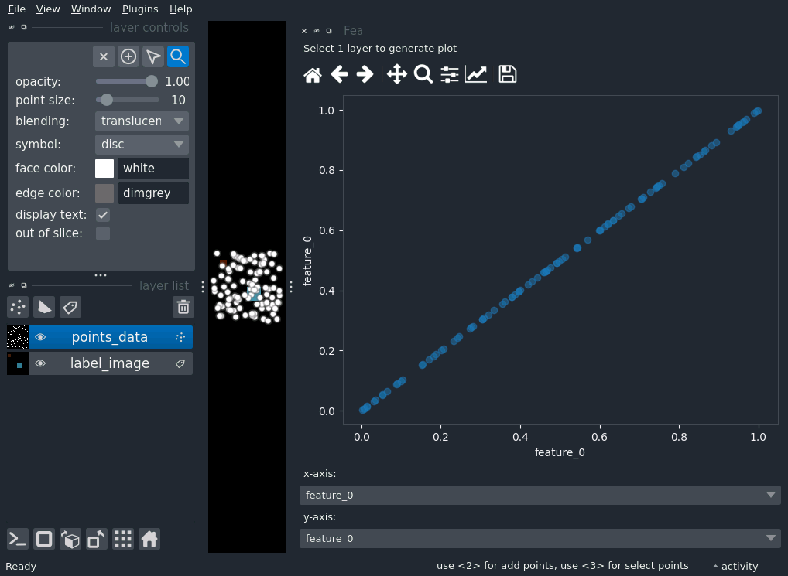

Note
Go to the end to download the full example code
Scattering features#
import napari
import numpy as np
from skimage.measure import regionprops_table
# make a test label image
label_image = np.zeros((100, 100), dtype=np.uint16)
label_image[10:20, 10:20] = 1
label_image[50:70, 50:70] = 2
feature_table_1 = regionprops_table(
label_image, properties=("label", "area", "perimeter")
)
feature_table_1["index"] = feature_table_1["label"]
# make the points data
n_points = 100
points_data = 100 * np.random.random((100, 2))
points_features = {
"feature_0": np.random.random((n_points,)),
"feature_1": np.random.random((n_points,)),
"feature_2": np.random.random((n_points,)),
}
# create the viewer
viewer = napari.Viewer()
viewer.add_labels(label_image, features=feature_table_1)
viewer.add_points(points_data, features=points_features)
# make the widget
viewer.window.add_plugin_dock_widget(
plugin_name="napari-matplotlib", widget_name="FeaturesScatter"
)
if __name__ == "__main__":
napari.run()
Total running time of the script: ( 0 minutes 2.557 seconds)